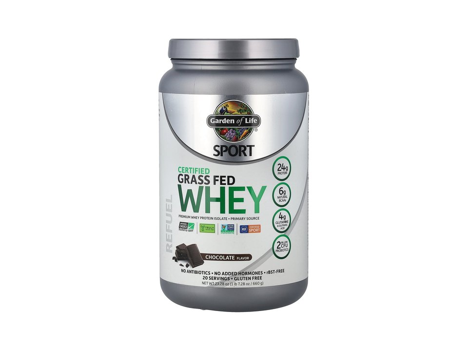

Product imagery supplied by the retailer. Packaging may vary — verify the Supplement Facts panel on the container you receive.
Garden of Life
SPORT Certified Grass Fed Whey
Our analysis — editorial take, not from the label
Grass-fed Irish whey with both NSF Certified for Sport and Informed Choice listed on the brand's Sport line — the trade-off is a small tub and premium per-serving cost.
- Protein
- 24 g
- Protein by weight
- 70%
- Source
- whey isolate blend
- Servings
- 20
Price tier: Premium · relative cost per full serving across this database
We don't list dollar prices — they change daily and go stale. Check the live price instead:
View current price at Amazon Compare all protein powdersScoop Sense doesn't collect user reviews and won't invent them. Read customer reviews on Amazon
Affiliate links — Scoop Sense may earn a commission at no additional cost to you.
Figures verified against Chocolate (34.5 g scoop, 672 g tub); sweetened with organic stevia, no artificial sweeteners.
Label verified: July 2026 · View label source
Label data
Per full serving · 20 servings per container · from the manufacturer's panel
| Protein per serving | 24 g |
|---|---|
| Serving size | 34.5 g |
| Protein per scoop | 70% |
| Calories | 125 |
| Total carbohydrate | 6 g |
| Total fat | 1 g |
| Source | whey isolate blend |
| Sweetener | stevia |
| Grass-fed whey protein isolate with milk protein | 24 g |
| Naturally occurring BCAAs | 6 g |
| Probiotics (Bifidobacterium lactis) | amount as labeled |
| Proprietary blend | No |
Primary label source: Swanson listing (Chocolate panel) · verified July 2026
Cautions
- Contains milk — not suitable for dairy allergy
- Smaller 672 g tub means fewer servings per purchase than typical 2 lb whey tubs
- Protein powders supplement food, not replace it
Formulated for healthy adults — not intended for anyone under 18. Full health & safety notes
Product details
Where this label sits
Garden of Life SPORT Certified Grass Fed Whey is one of the protein powders in the Scoop Sense database. It runs 20 servings per container at the full labeled serving. Everything on this page comes from the manufacturer's supplement facts panel as of July 2026 — never from the marketing page.
Key ingredients & studied doses
- Grass-fed whey protein isolate with milk protein · 24 g. Isolate-primary whey from Irish grass-fed herds; whey protein is studied for supporting post-exercise muscle repair.
- Naturally occurring BCAAs · 6 g. Labeled branched-chain amino-acid content from the whey.
- Probiotics (Bifidobacterium lactis) · amount as labeled. An added probiotic strain listed on the panel.
Flavors & sweetener
Figures verified against Chocolate (34.5 g scoop, 672 g tub); sweetened with organic stevia, no artificial sweeteners.
Who it's best for
A standard-ratio powder — fine as a food supplement when total daily protein is what matters. Derived from the label figures above — not medical advice.
How we log this label
Every entry is built the same way: we read the current supplement facts panel, log each disclosed dose, compare it against the amounts used in published research, flag proprietary blends, and state the cautions plainly. The full methodology explains each step.
This label against the research
How we evaluate labelsEach bar shows the amount commonly used in published human research, and where this label's dose falls against it. Research amounts are context, not a recommendation — they are not doses, and nothing here is medical advice. The bars compare what the label states; we do not laboratory-test the product to confirm it.
-
Protein24 g
At or above the studied amount0studied range 20 g–40 g50 g
Per-meal doses studied for muscle protein synthesis run about 20–40 g of high-quality protein, with the upper half of that range favoured for larger athletes and older adults.
Source: Jäger et al., Journal of the International Society of Sports Nutrition 2017 — “General recommendations are 0.25 g of a high-quality protein per kg of body weight, or an absolute dose of 20–40 g.”
Common questions about Garden of Life SPORT Certified Grass Fed Whey
How much of a Garden of Life SPORT Certified Grass Fed Whey scoop is actually protein?
24 g of protein from a 34.5 g serving — about 70%. The rest is flavoring, fats, carbs, and whatever else the label lists. A higher percentage means less filler per scoop.